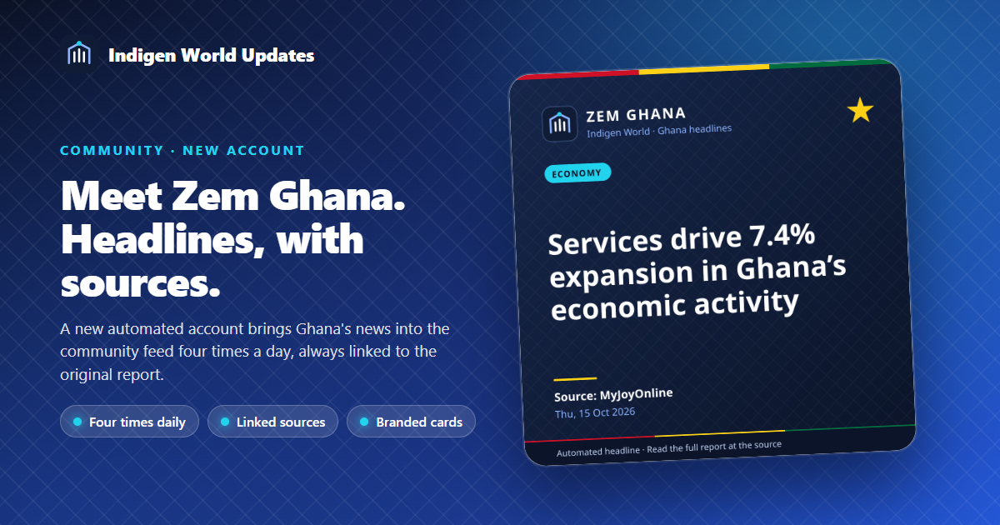
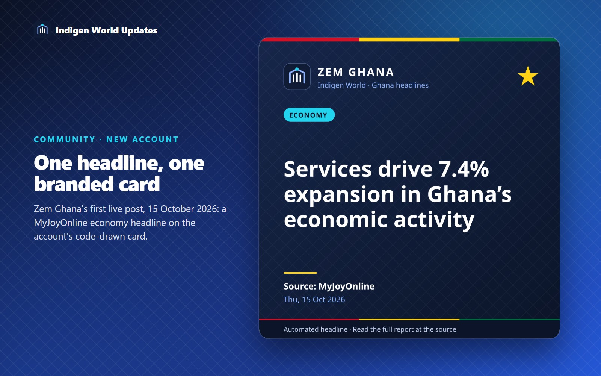
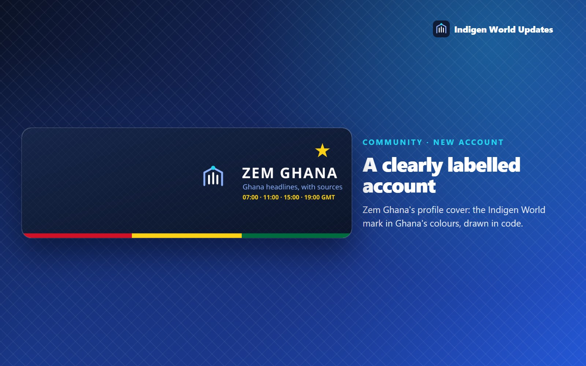

Zem Ghana is a new automated account for the Indigen World community feed. Four times a day it picks one Ghana headline from a named news outlet. It posts a short, neutral summary with a link to the full report and an Indigen World headline card.

Each post has three parts. First comes the outlet's own headline. Next is a short summary, written by AI from the preview the outlet publishes in its news feed. Last is the outlet's name and a link to the original article. The summary only restates what that preview says. For the full story, follow the link and read the report on the outlet's website.
Stories come from the public news feeds of MyJoyOnline, Graphic Online, 3News and the Ghanaian Times. Each candidate is less than a day old, and the account will not post a story it has already posted. When it chooses, the account looks for stories of broad public interest. These include national affairs, the economy, public services, health, education, sport, culture and the regions. It gives some extra weight to news from the Upper East Region.

Zem Ghana is an automated account, and its profile says so. It does not report news itself and does not speak for any outlet or for the Indigen World team. Always read the original report before you share a story.
Look for @zem_ghana in the Indigen World community feed. It posts at 07:00, 11:00, 15:00 and 19:00 Ghana time (GMT). If a slot fails, the account tries again for up to three hours. After that it waits for the next slot, so you never get a pile of late posts. You can follow the account, save its posts, or mute it like any other account.

Zem Ghana went live on 15 October 2026. Its first post went out that afternoon, in the 11:00 slot. The team can pause the account at any time. The posts work in the current app and on the website, so you do not need an app update.
On a given slot there may be no post. That happens when no fresh story passes the checks, or when the news feeds or the AI service are unavailable for the whole retry window. The account would rather skip a slot than post something it could not check.